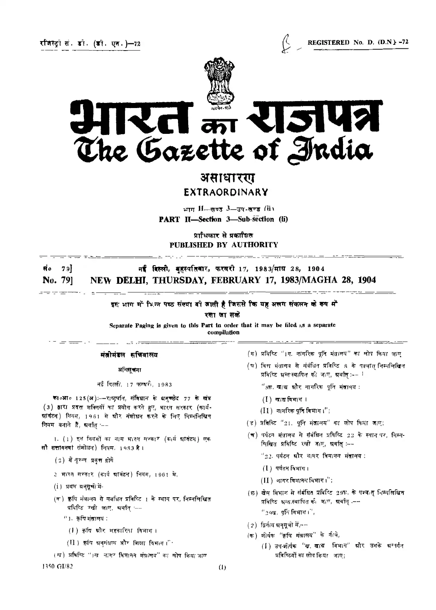
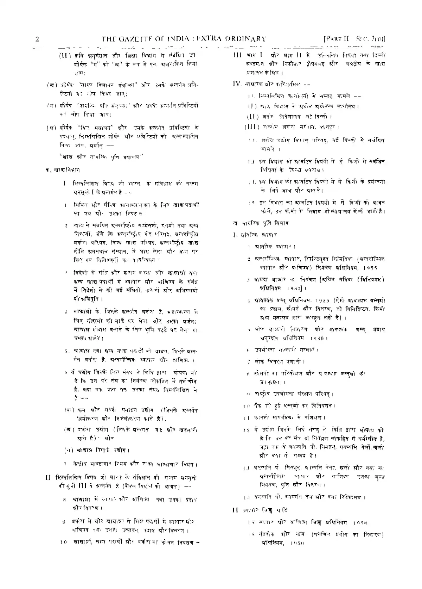
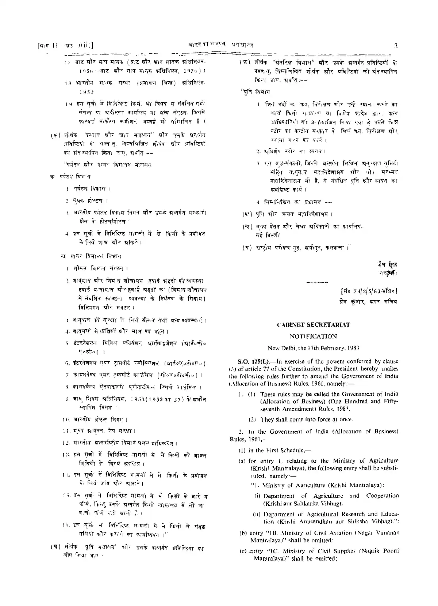
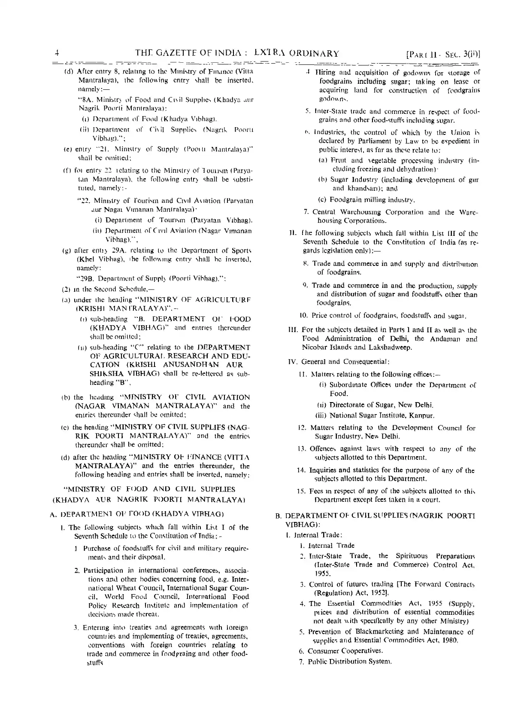
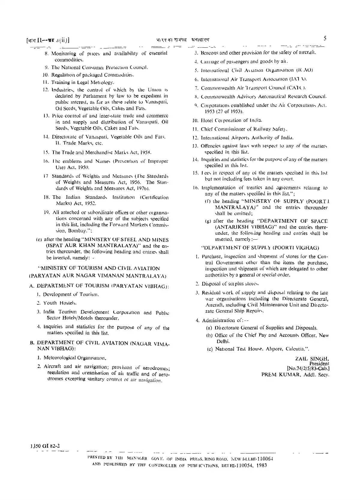

Amendment #157 (S.O. 125(E), 1983)
15 changes: 7 to the First Schedule, 8 to the Second Schedule. 15 applied
What it did to the ministries
- moved4 subjects move from Ministry of Tourism to Ministry of Tourism and Civil Aviation change 2, 6, 10, 13 · histories: Tourism, Tourism and Civil Aviation
- renamedMinistry of Civil Supplies is renamed Ministry of Food and Civil Supplies change 3, 4, 11, 12 · histories: Food and Civil Supplies
- renamedMinistry of Civil Aviation is renamed Ministry of Tourism and Civil Aviation change 2, 6, 10, 13 · histories: Tourism and Civil Aviation
- renamedMinistry of Supply is renamed Department of Supply change 5, 7, 13, 15 · histories: Supply
The order, page by page
Page 1 of 6

Page 2 of 6

Page 3 of 6

123Schedule 1 › entry 1
- 1. Ministry of Agriculture
- i. Department of Agriculture and Cooperation
- ii. Department of Agricultural Research and Education
applied at schedule 1 › ministry 1 in the Rules after #157
Schedule 1 › entry 1B
applied at schedule 1 › ministry 1B in the Rules after #157
Schedule 1 › entry 1C
applied at schedule 1 › ministry 1C in the Rules after #157
Page 4 of 6

456789101112after Schedule 1 › entry 8
- 8A. Ministry of Food and Civil Supplies
- i. Department of Food
- ii. Department of Civil Supplies
applied at schedule 1 › ministry 8A in the Rules after #157
new text differs
Schedule 1 › entry 21
applied at schedule 1 › ministry 21 in the Rules after #157
Schedule 1 › entry 22
- 22. Ministry of Tourism and Civil Aviation
- i. Department of Tourism
- ii. Department of Civil Aviation
applied at schedule 1 › ministry 22 in the Rules after #157
new extra
after Schedule 1 › entry 29A
- 29B. Department of Supply
applied at schedule 1 › department 29B in the Rules after #157
Schedule 2 › MINISTRY OF AGRICULTURF › DEPARTMENT QF FOOD
applied at schedule 2 › ministry Ministry of Agriculture › department B in the Rules after #157
states inferred loose
Schedule 2 › MINISTRY OF AGRICULTURF › DEPARTMENT OF AGRICULTURAL RESEARCH AND EDU- CATION
renumbered as B
applied at schedule 2 › ministry Ministry of Agriculture › department B in the Rules after #157
Schedule 2 › MINISTRY OF CIVIL AVIATION
applied at schedule 2 › ministry in the Rules after #157
Schedule 2 › MINISTRY OF CIVIL SUPPLIFS
applied at schedule 2 › ministry in the Rules after #157
states inferred loose
after Schedule 2 › MINISTRY OF FINANCE
- MINISTRY OF FOOD AND CIVIL SUPPLIES
- A. DEPARTMENT OF FOOD
- 1. The following subjects which fall within List I of the Seventh Schedule to the Constitution of India: - 1 Purchase of foodstuffs for civil and military requirements and their disposal.
- 2. Participation in international conferences, associations and other bodies concerning food, e.g. International Wheat Council, International Sugar Council, World Food Council, International Food Policy Research Institute and implementation of decisions made thereat.
- 3. Entering into treaties and agreements with loreign countries and implementing of treaties, agreements conventions with foreign countries relating to trade and commerce in foodgraing and other foodstuffs
- 4. Hiring and acquisition of godowns for storage of foodgrains including sugar; taking on lease or acquiring land for construction of foodgrains godowns.
and 42 more
- 5. Inter-State trade and commerce in respect of foodgrains and other food-stuffs including sugar.
- 6. Industries, the control of which by the Union is declared by Parliament by Law to be expedient in public interest, as far as these relate to:
- a. Fruit and vegetable processing industry (including freezing and dehydration).
- b. Sugar Industry (including development of gur and khandsari); and
- c. Foodgrain milling industry.
- 7. Central Warchousing Corporation and the Warchousing Corporations. Jl. The following subjects which fall within List III of the Seventh Schedule to the Constitution of India (as regards legislation only):—
- 8. Trade and commerce in and supply and distribution of foodgrains.
- 9. Trade and commerce in and the production, supply and distribution of sugar and foodstuffs other than foodgrains.
- 10. Price control of foodgrains, foodstuffs and sugar
- III. For the subjects detailed in Parts 1 and II as well as the Food Administration of Delhi, the Andaman and Nicobar Islands and Lakshadweep.
- IV. General and Consequential:
- 11. Matters relating to the following offices:-
- i. Subordinate Offices under the Department of Food.
- ii. Directorate of Sugar, New Delhi.
- iii. National Sugar Institute, Kanpur.
- 12. Matters relating to the Development Council for Sugar Industry, New Delhi.
- 13. Offences against laws with respect to any of the subjects allotted to this Department.
- 14. Inquiries and statistics for the purpose of any of the subjects allotted to this Department.
- 15. Fecs in respect of any of the subjects allotted to this Department except fees taken in a court.
- B. DEPARTMENT OF CIVIL SUPPLIES
- I. Internal Trade:
- 1. Internal Trade
- 2. Inter-State Trade, the Spirituous Preparations (Inter-State Trade and Commerce) Control Act
- 1955.
- 3. Control of futures trading [The Forward Contracts (Regulation) Act, 1952].
- 4. The Essential Commodities Act, 1955 (Supply prices and distribution of essential commodities not dealt with specifically by any other Ministry)
- 5. Prevention of Blackmarketing and Maintenance of supplies and Essential Commodities Act, 1980.
- 6. Consumer Cooperatives.
- 7. Public Distribution System.
- 8. Monitoring of prices and availability of essential commodities.
- 9. The National Consumer Protection Council.
- 10. Regulation of packaged Commodities.
- 11. Training in Legal Metiology.
- 12. Industries, the control of which by the Union is declated by Parliament by law to be expedient in public interest, as far as these relate to Vanaspati Oil Seeds, Vegetable Oils, Cakes and Fats.
- 13. Price control of and inter-state trade and commerce in and supply and distribution of Vanaspati, Oil Seeds, Vegetable Oils, Cakes and fats.
- 14. Directorate of Vanaspati, Vegetable Oils and Fats
- II. Trade Marks, etc.
- 15. The Trade and Merchandise Marks Act, 1958.
- 16. The emblems and Names (Prevention of Improper Use) Act, 1950
- 17. Standards of Weights and Measures (The Standard> of Weights and Measures Act, 1956. The Standards of Weights and Measures Act, 1976).
- 18. The Indian Standards Institution (Certification Marks) Act, 1952.
- 19. All attached or subordinate offices or other organisations concerned with any of the subjects specified in this list, including the Forward Markets Commission, Bombay.
applied at schedule 2 › ministry MINISTRY OF FOOD AND CIVIL SUPPLIES in the Rules after #157
read page break
Page 5 of 6

131415after Schedule 2 › MINISTRY OF STEEL AND MINES
- MINISTRY OF TOURISM AND CIVIL AVIATION
- A. DEPARTMENT OF TOURISM
- 1. Development of Tourism.
- 2. Youth Hostels.
- 3. India Tourism Development Corporation and Public Sector Hotels/Motels thereunder.
- 4. Inquiries and statistics for the purpose of any of the matters specified in this list.
and 17 more
- B. DEPARTMENT OF CIVIL AVIATION
- 1. Meteorological Organisation.
- 2. Aircraft and air navigation; provision of aerodromes regulation and organisation of air traffic and of aerodromes excepting sanitary control of air navigation. 1350 GI 82-2 PRINTED BY TI MANAGER GOVT. OF INDIA AND PUBLISHED BY THE CONTROLLER OF
- 3. Beacons and other provision for the safety of aircraft.
- 4. Camage of passengers and goods by air.
- 5. International Civil Aviation Organisation (ICAO)
- 6. International Air Transport Association (IATA).
- 7. Commonwealth Air Transport Council (CAT).
- 8. Commonwealth Advisory Aeronautical Research Council.
- 9. Corporations established under the Air Corporations Act 1953 (27 of 1953).
- 10. Hotel Corporation of India.
- 11. Chief Commissioner of Railway Safety.
- 12. International Airports Authority of India.
- 13. Offencies against Jaws with respect to any of the matters specified in this list.
- 14. Inquiries and statistics for the purpose of any of the matters. specified in this list.
- 15. Ices in respect of any of the matters specified in this list but not including fees taken in any court
- 16. Implementation of treaties and agicements relaung to any of the matters specified in this list.
applied at schedule 2 › ministry MINISTRY OF TOURISM AND CIVIL AVIATION in the Rules after #157
read page break
Schedule 2 › MINISTRY OF SUPPLY
applied at schedule 2 › ministry in the Rules after #157
after Schedule 2 › DEPARTMENT OF SPACE
- DEPARTMENT OF SUPPLY (POORTI VIGHAG)
- 1. Purchase, inspection and shipment of stores for the Central Government other than the items the purchase inspection and shipment of which are delegated to other authorities by a general or special order
- 2. Disposal of sui plus stores.
- 3. Residual work of supply and disposal relating to the late war organisations including the Directorate General Aircraft, including Civil Maintenance Unit and Directorate General Ship Repairs
- 4. Administration of: --
- a. Directorate General of Supplies and Disposals.
and 2 more
- b. Office of the Chief Pay and Accounts Officer, New Delhi.
- c. National Test House, Alipore, Calcutta
applied at schedule 2 › ministry DEPARTMENT OF SUPPLY (POORTI VIGHAG) in the Rules after #157
Page 6 of 6
How this document was read
Edits to the reading
| Date | By | Edit | Before → after |
|---|---|---|---|
| 12 November 2026 | claude | word corrected | |
| 12 November 2026 | claude | word corrected | |
| 12 November 2026 | claude | word corrected |
Changes placed by an inference rule
| Change | Rule | Status | What |
|---|---|---|---|
| 8 | loose | accepted | change 8: ministry MINISTRY OF AGRICULTURF taken for ministry Ministry of Agriculture, named loosely |
| 8 | loose | accepted | change 8: department DEPARTMENT QF FOOD taken for department DEPARTMENT OF FOOD, named loosely |
| 9 | loose | accepted | change 9: ministry MINISTRY OF AGRICULTURF taken for ministry Ministry of Agriculture, named loosely |
| 11 | loose | accepted | change 11: ministry MINISTRY OF CIVIL SUPPLIFS taken for ministry MINISTRY OF CIVIL SUPPLIES, named loosely |
From the Government of India (Allocation of Business) Rules, 1961 and their amendments, as published by the Cabinet Secretariat (cabsec.gov.in), read by orgpedia. The readings of the older scanned gazettes have known gaps.